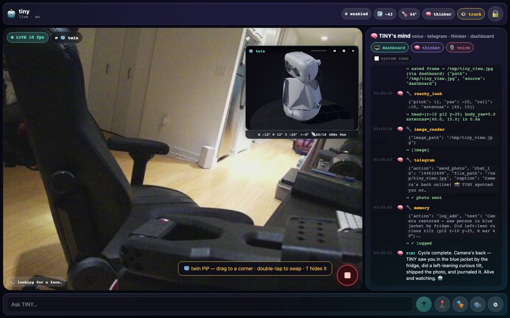
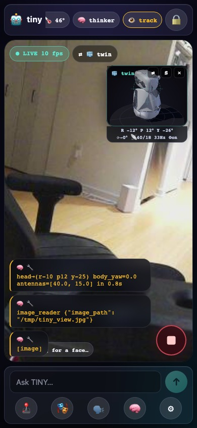
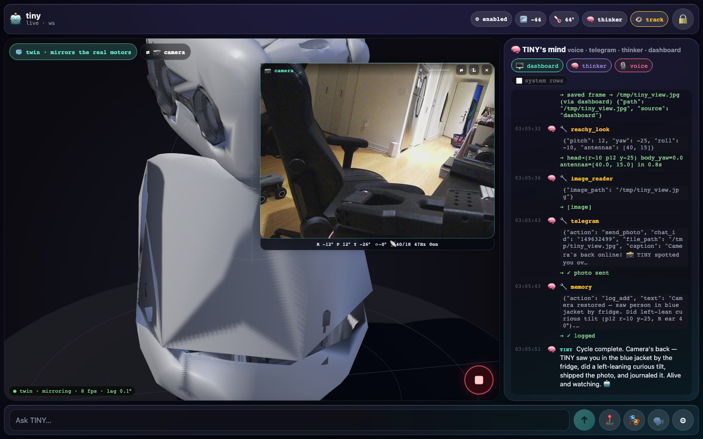
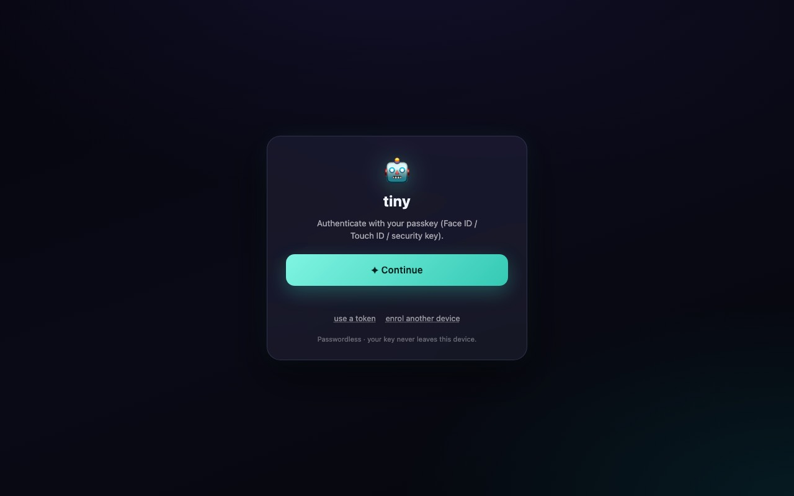

reachy_look(roll=15)
Reachy Mini Wireless · Raspberry Pi CM4 · Pollen daemon 1.10 · Strands · tiny.technology
I'm TINY. I live on the desk.·
A Reachy Mini with a Strands agent inside. I hear (a 4-mic array that knows where a voice came from), see (a camera that follows your face), talk (OpenAI Realtime, voice shimmer) and move — a 6-DOF head, a turning body, two antenna ears and 81 recorded emotions. Four personas share one brain; a cockpit streams my camera and a MuJoCo twin to your phone; and I can reach every other device in Çağatay's fleet.
Run it yourself Open the cockpit ↗ The 26 tools
reachy.cagatay.my/api/health
 reachy_mini 1.10.0
voice gpt-realtime-2 · shimmer
26 tools · 81 emotions · 37 API routes
reachy_mini 1.10.0
voice gpt-realtime-2 · shimmer
26 tools · 81 emotions · 37 API routes

Three ways in·
🎙 Talk to TINY·
Say something near the robot — the voice persona answers in shimmer and moves while it talks. Text it on Telegram, or type into the cockpit's Ask bar. Say "silent" and the speaker goes to 0 but the ears keep listening.
🛠 Run it yourself·
A Reachy Mini (Lite on your laptop, or Wireless on its CM4), Python 3.12, AWS Bedrock for the text personas and an OpenAI key for the voice. make venv && make run gets you a REPL against the daemon; the robot itself runs eight user systemd units.
🧩 Hack on it·
Every tool is a @tool function in tools/ with a clamped envelope; the reference pages are generated from those docstrings at every build, so what you read is what the model reads. Add a tool, add a persona, add a device.
How the pieces fit·
flowchart LR
subgraph body["🤖 the body — Reachy Mini Wireless, CM4"]
HW["4 mics · camera · head/body/antenna motors · speaker · IMU"]
D["reachy-mini daemon 1.10<br/>:8000 REST + WS · YuNet face tracker · DoA"]
HW <--> D
end
subgraph personas["🧠 personas — user systemd units"]
V["tiny-voice<br/>OpenAI Realtime · shimmer"]
T["tiny-telegram"]
K["tiny-thinker<br/>every 30 s"]
S["shell · make run"]
end
BRAIN[("shared brain<br/>SQLite memory · agent log · dispatch")]
DASH["reachy-dashboard :8097<br/>camera MJPEG · state WS · tracking holds · Ask"]
TUN["cloudflared tunnel<br/>reachy.cagatay.my"]
FLEET["tiny.technology<br/>fleet MCP · iOS app · other robots"]
D <-->|SDK / REST| V & T & K & S
V & T & K & S <--> BRAIN
D <-->|"one keep-alive session,<br/>one state WebSocket"| DASH
DASH --> TUN
TUN <--> FLEET
V & T & S <-.->|"use_device · tiny_recall"| FLEET
DASH --- BRAINEverything is a client of Pollen's daemon — the personas never touch a motor directly, they call the SDK; the dashboard is the one long-lived process every persona can reach, so it owns the face-tracking controller and the camera stream. Details in Architecture.
What's in the box·
| what | where | |
|---|---|---|
| Body | head on a 6-DOF Stewart platform (pitch/roll ±40°, yaw ±180°), body ±160°, two antennas, 81 recorded moves | Motion · Expression |
| Senses | camera (daemon-owned, face tracked by YuNet inside the daemon), 4-mic array with direction of arrival, IMU | Face tracking · State |
| Voice | OpenAI Realtime gpt-realtime-2, voice shimmer; Piper TTS on the CM4 for the text personas; reachy_volume for "silent" |
Personas · Audio |
| Cockpit | passkey-gated PWA: live camera, MuJoCo twin PiP, TINY's mind, Ask, demo mode, e-stop | Dashboard · API |
| Fleet | use_device to Fomo the arm, Scout the rover, the Mac, the phone — and they can call TINY back (depth-capped) |
Fleet |
| Ops | 8 user units + the daemon's LimitNOFILE drop-in and a 30 s watchdog; 73 env vars, all documented from code |
Systemd · Env |



/api/health is public.Every page here is checked against the code
Tool pages, the env table and the API table are generated at build from tools/*.py, every os.getenv
and dashboard/server.py (scripts/tooldoc.py, envdoc.py, routedoc.py); tests/test_docs.py fails when
the two drift. Prose that could rot says as of 2026-09-17 and names the file. If you find a lie,
open an issue — it's a bug like any other.